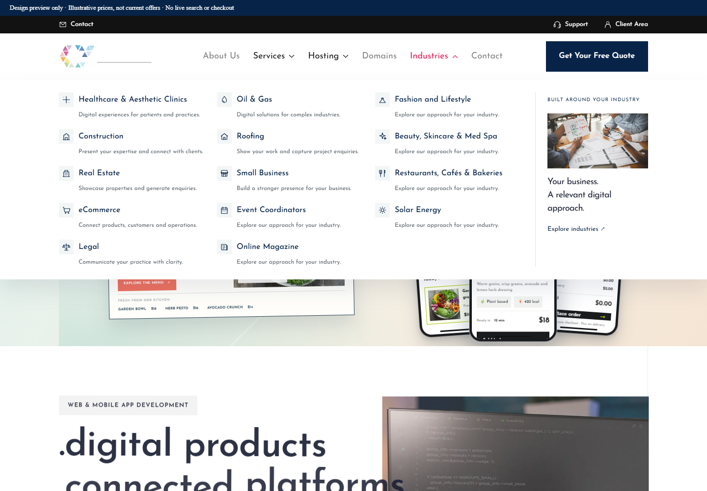
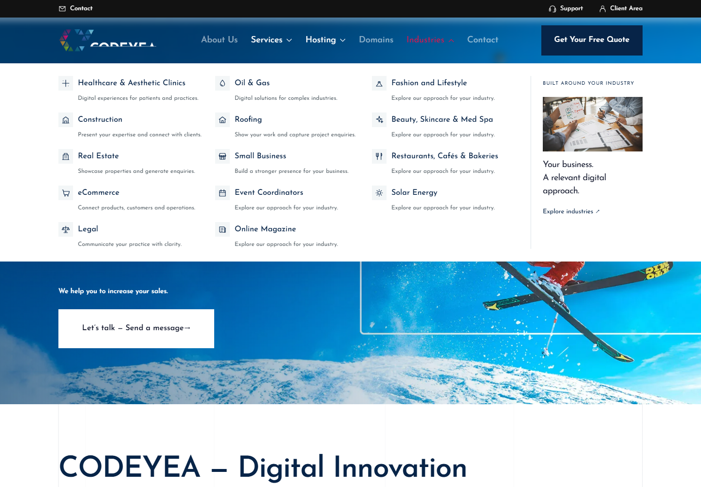
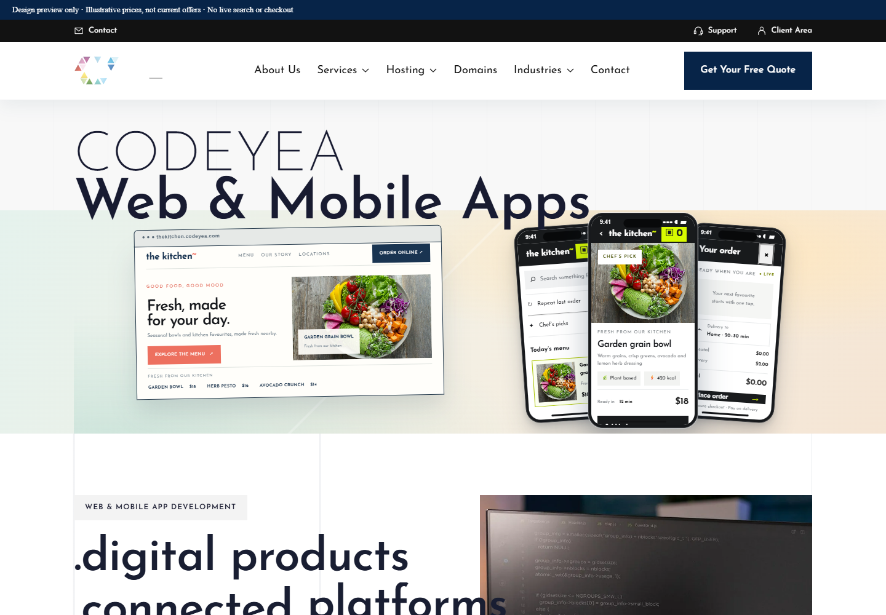
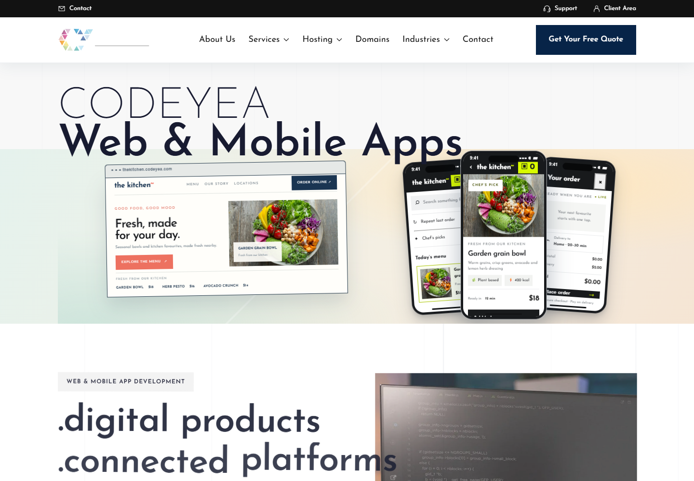
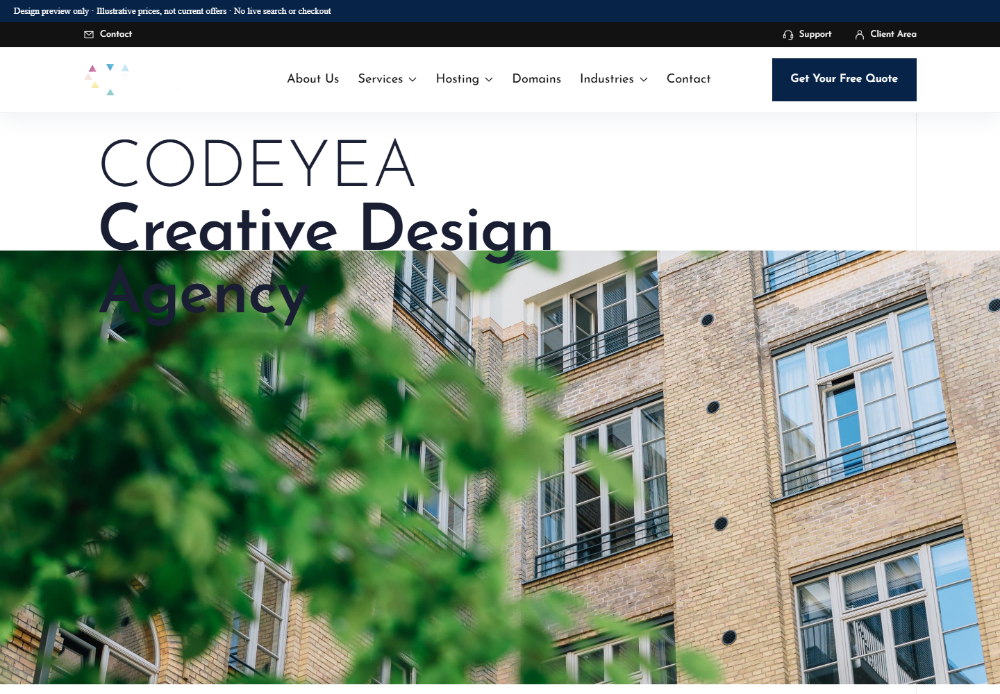
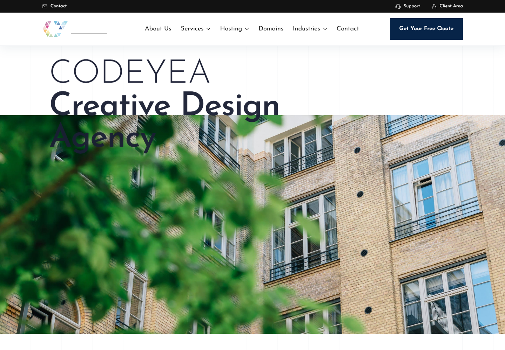

نسخة الإنتاج المحلية: افتح الموقع · Web & Mobile Apps · Contact · Domains · About
الهيدر والفوتر موحدان، وكل صفحات الصناعات الـ14 تعمل. التعديلات مرتبطة بالمكونات وقوالب الموقع والـCMS؛ أفكار الهيرو المرفوضة لم تدخل الهوم.






150 اختبارًا ناجحًا، بناء إنتاج ناجح، 32 صفحة بخمسة مقاسات، وفحص الصفحات الـ18 وقوالب الـ14 في CMS.